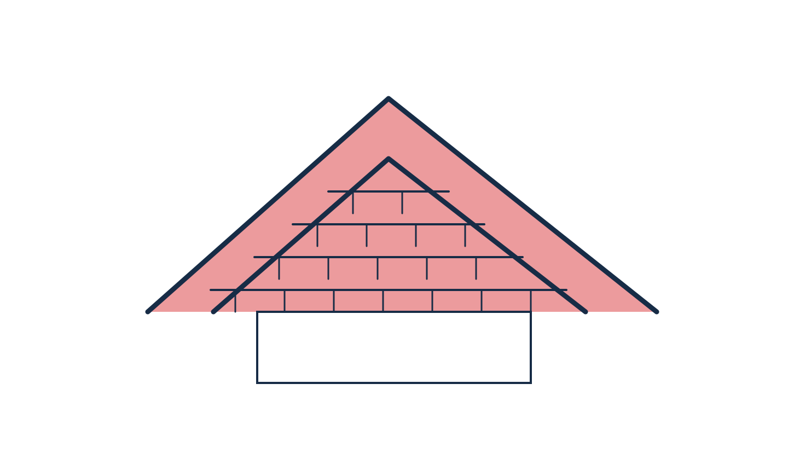
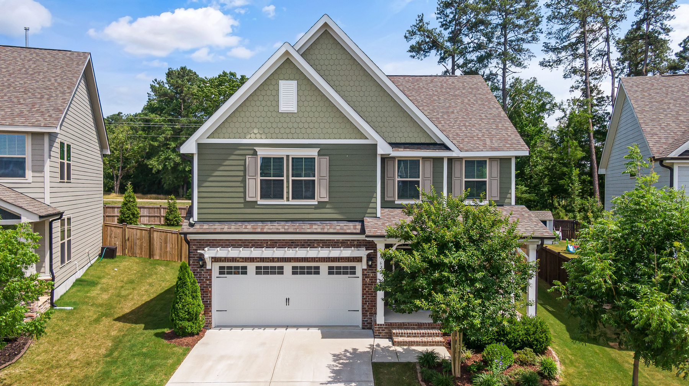
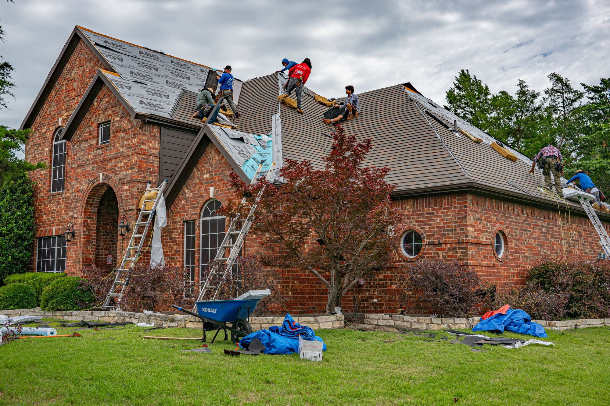
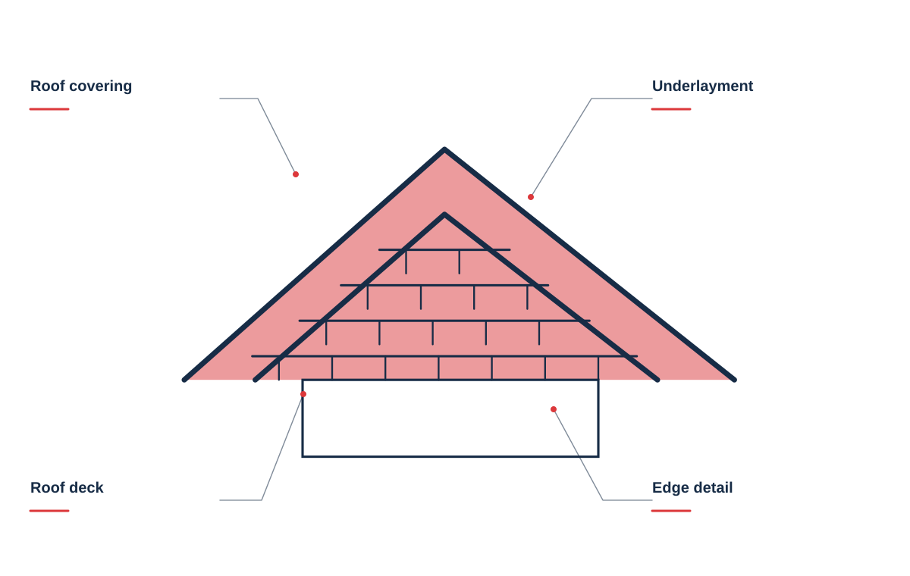
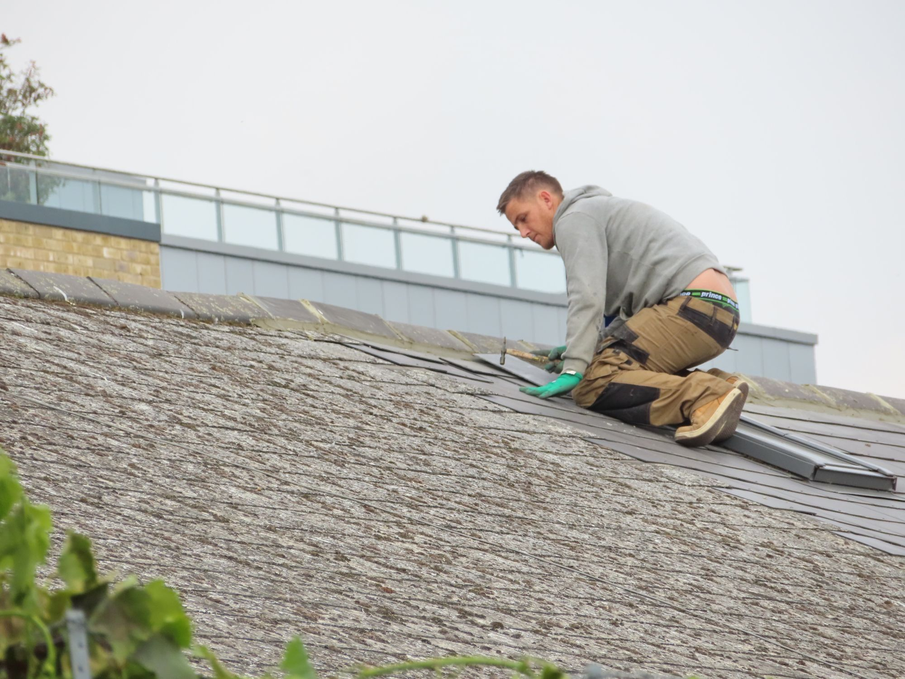
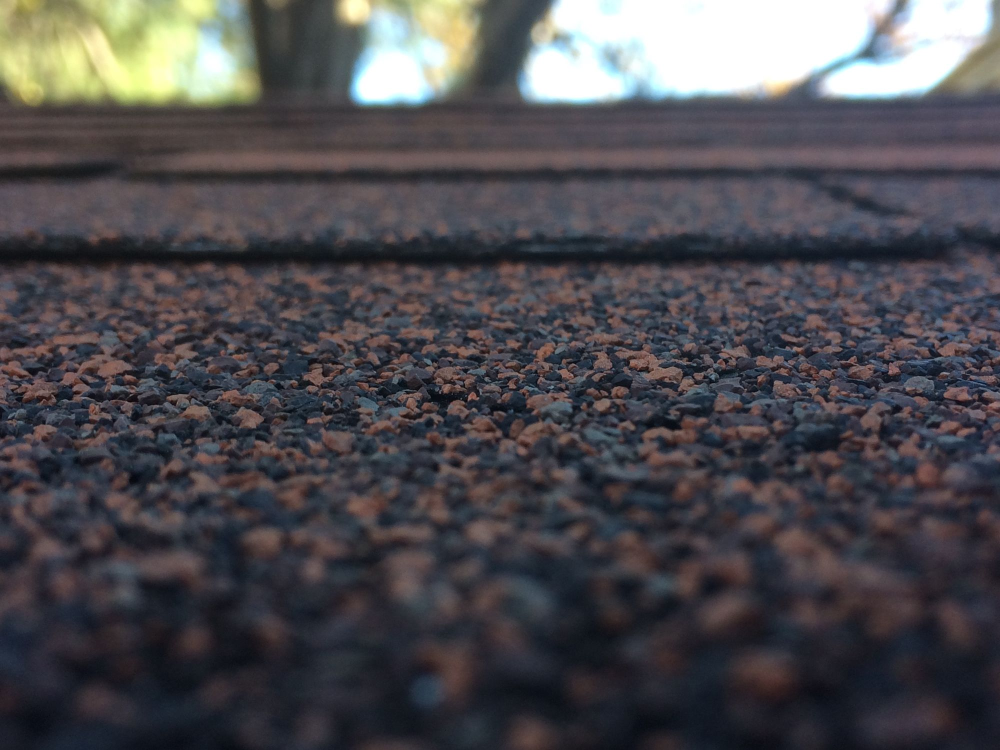
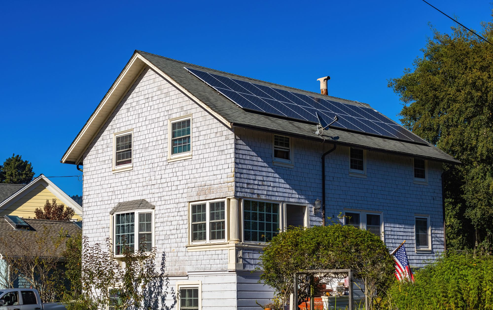
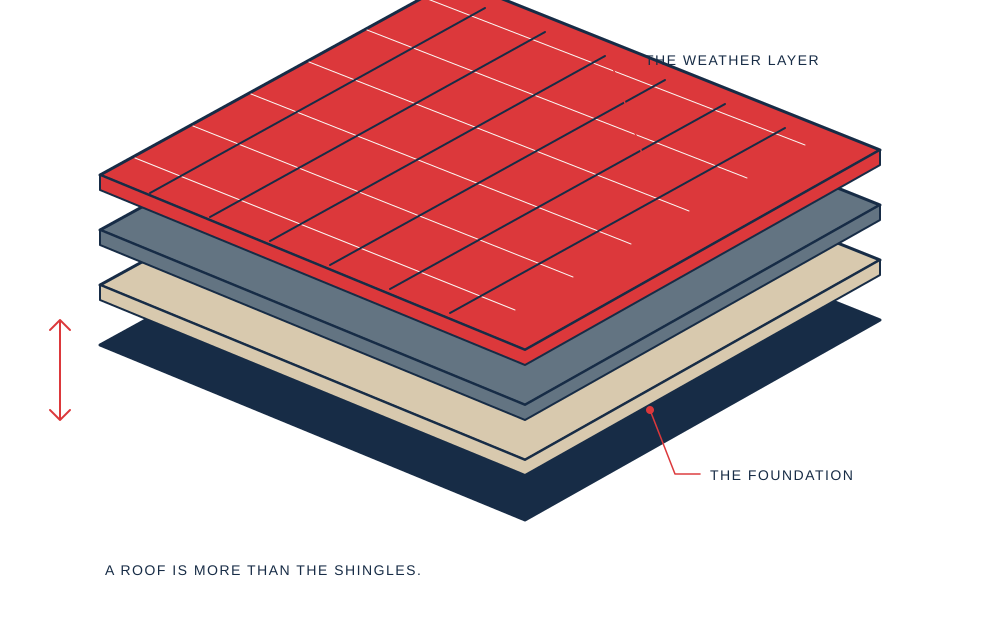
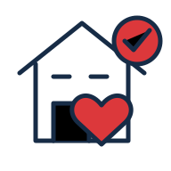

Roof replacement
A complete plan for materials, preparation, installation, and cleanup.

A closer look at your roof. A clear plan for what comes next.
Start with a roof conversation ↗

A complete plan for materials, preparation, installation, and cleanup.
Targeted attention for leaks, worn flashing, and damaged shingles.
A practical assessment after wind and weather take their toll.
Understand your roof’s condition before you make a decision.
A repair, a replacement, or a closer look at a concern should start with the roof you have. We talk through the visible condition, the property, and the decisions ahead.

HARLAN’S / THE DETAILS MATTERDescribe the concern and the part of the roof involved. We can discuss the inspection and repair scope worth considering.
Review the roof shape, material preferences, surrounding property, and the work that should be included in a proposal.
Edges, transitions, drainage, and the area around the house all belong in the planning conversation.

A roofing decision should start with a closer look. We explain what we find, show you the areas that need attention, and build a scope around your roof—not a one-size-fits-all package.



Share what you’ve noticed and any photos you have.
Review the condition and discuss suitable next steps.

Understand the scope before making your decision.
When you get in touch, a little context goes a long way. These are the details that help us start a useful conversation about your roofing project.
Tell us what you have in mind ↗Tell us about what you have noticed so the conversation starts with your situation.
A few details about roof and access details help us understand what you need.
Share material preferences when you get in touch, including photos where useful.
Let us know about timing and priorities so the proposed scope reflects your priorities.
Not always. A localized repair may be appropriate. An assessment helps establish the condition and extent of the problem.
Yes. We can review available styles and colors alongside the look of your home.
Your proposal can cover access, protection of surrounding areas, debris removal, and the final cleanup.